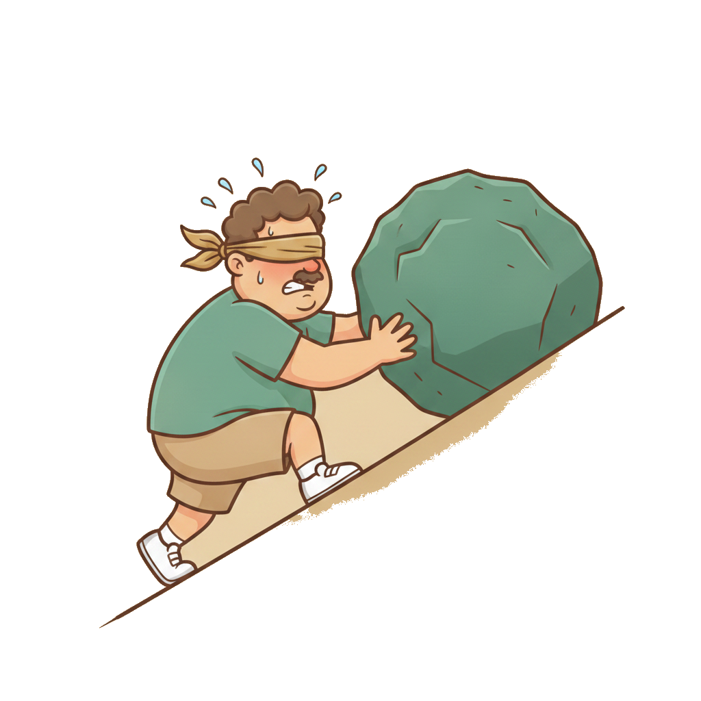
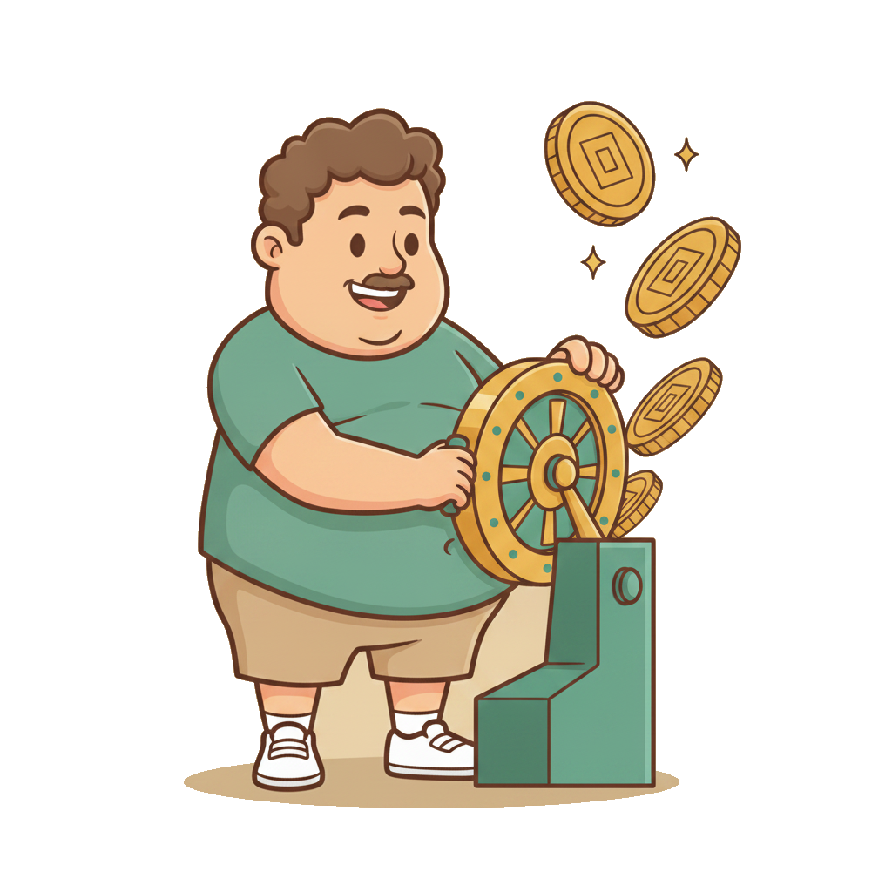
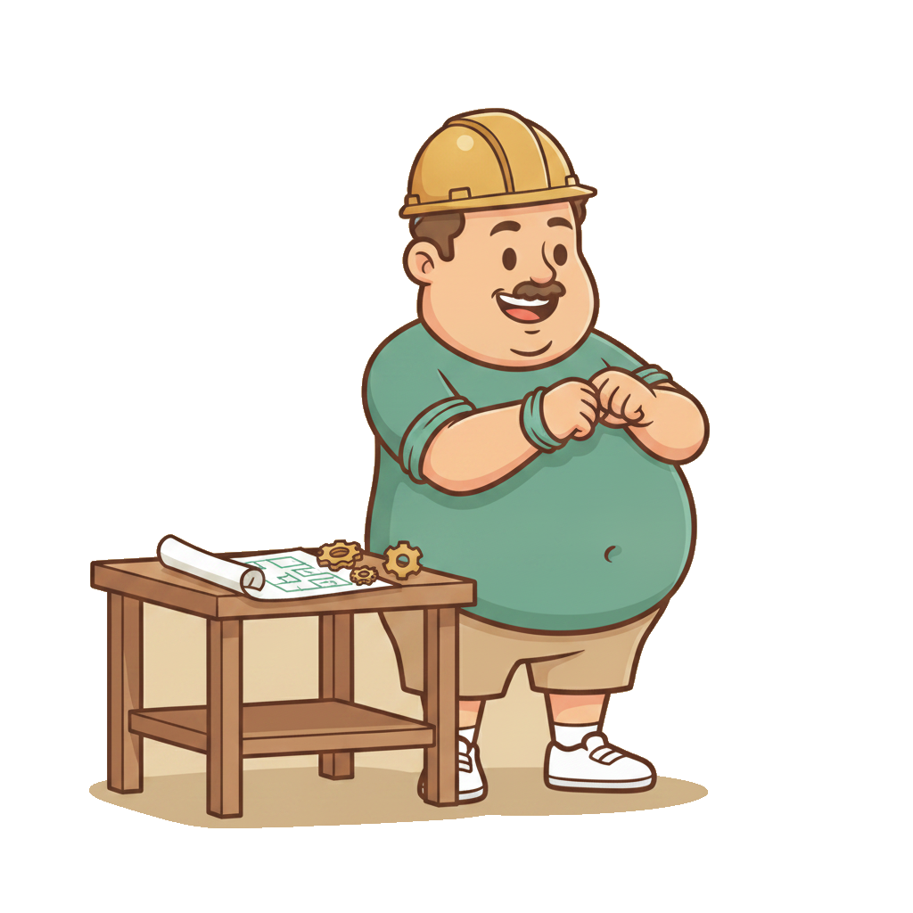
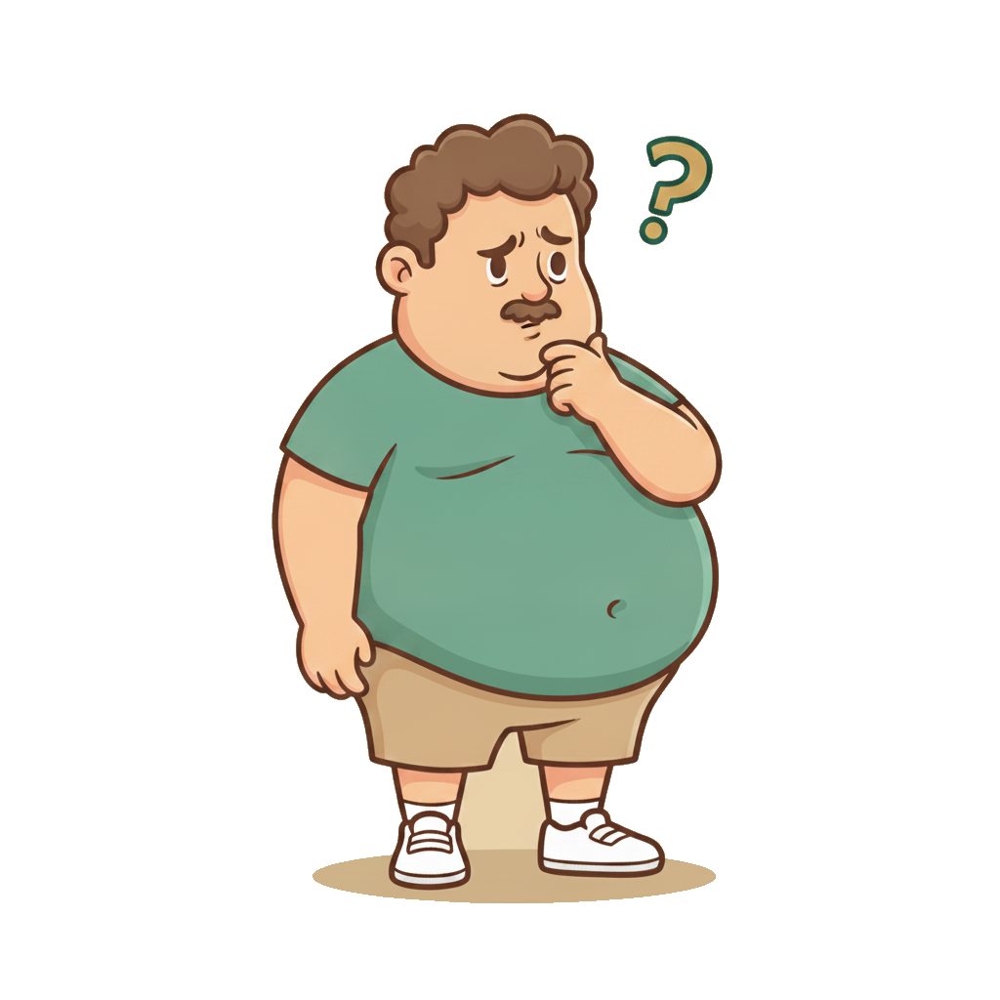

Дальше по траектории — ОКК на AI и плейбуки. Оба модуля бессмысленны, если сильные люди уходят через полгода.
Практикум A-Players
Два кейса, с которых всё началось
Любой проект я начинаю не с РОПа, а с HR-дженералиста
Кейс 1 · порядок найма
Ошибки в команде неизбежны, кого-то придётся заменить. Если весь найм и перенайм лежит на собственнике, проект растёт медленно. Первый человек в команде — тот, кто страхует результат через людей.
Кейс 2 · скорость роста
Быстрый рост Q-маркетинга и Skypro не был случайностью: срез по команде, слабых заменяли, а перенайм доходил до 60% топ-менеджмента. Замены позволяли быстрее калиброваться и расти дальше.
Команда — это не «повезло с людьми». Это последовательность действий, которую можно повторить. Её мы сегодня и разложим.
Практикум A-Players
Главная рамка модуля
Три трети работы с командой
1/3
Найти
Воронка найма, план-факт, никаких компромиссов. Модуль 11
Всё на готовых шаблонах A-Players: копируешь, заполняешь своими цифрами. Каждый скрин в презентации кликается и открывает шаблон.
Практикум A-Players
Блок 1 · Когда нужна HR-функция
Четыре триггера: пора выделять HR
Триггер 1
20–30+ человекКаждый месяц 3–4 роли стабильно в найме или перенайме. Замена слабых тоже считается.
Триггер 2
Найм стал системнымПоток вакансий, планируемся на 3–4 месяца вперёд под рост трафика.
Триггер 3
«Людской шум»Конфликты, выгорание, демотивация, тревога в команде.
Триггер 4
Основатель устал быть психологомВсе HR-вопросы сходятся на одном человеке. Долго так не выдержать.
Павел Власов (Head of HR Skyeng) называет порог в 30 человек. Моё правило жёстче: как только 3–4 позиции открыты каждый месяц, нужен свой HR-дженералист.

Практикум A-Players
Бенчмарк времени собственника
Больше 20% твоего времени на HR-рутину — пора нанимать
Это не про собеседования
Culture fit и финальная встреча с фаундером остаются за тобой. Это этапы воронки из модуля 11.
Это про HR-процессы
Написать и разместить вакансию, отсмотреть отклики, отобрать анкеты, оформить, уволить, разрулить конфликт, выслушать выгоревшего. Если это съедает день — сигнал к изменениям.
Бенчмарк 20%: выступление П. Власова (Skyeng), мастермайнд A-Players, 20.02.2026
Практикум A-Players
Что входит в HR-функцию
Шесть зон — и не все нужны с первого дня
🎯 Главное
РекрутингРазмещение, отклики, скрининг, воронка с план-фактом
Развитие и оценкаГрейды junior / middle / senior, PDP, Performance Review
💰 Удержание
C&BКомпенсации, бонусы, льготы — удержание через рыночные вилки
🧮 Прогноз
WFMСколько людей нужно под план по лидам и продажам
⭐ Репутация
HR-брендЛендинг для кандидатов, отзывы, реферальная программа
В компании до 50 человек всё это делает один универсал. Но сильнее всего у него должен быть рекрутинг: хотя бы уровня middle по карте навыков.
Практикум A-Players
Какой HR нужен на каком размере
Лестница HR-функции
до 50 чел
HR-дженералист
Один универсал, сильнейший навык — рекрутинг
50–100
Senior HR-дженералист
Junior и middle не вывезут системный найм: будут ошибаться и не дотягивать воронки
100+
HRD + 1–2 рекрутера
HRD: HR-бренд, C&B, развитие. Рекрутеры: резюме, отклики, первичные интервью
~1 000
HR + HRBP
Полноценная архитектура people-management. Около 1 HRBP на 1 000 сотрудников
Как нанять первого HR (совет Власова): вакансия «HR-дженералист» на hh.ru, кандидатов много. Если не умеешь оценить HR — иди в агентство с запросом «сеньор», они приведут финалистов.
Практикум A-Players
Аналогия, которая всё упрощает
Рекрутер — это сейлз. У него план-факт каждый день
В HR
В продажах
Рекрутер
Менеджер по продажам: линейный, с планом
HRD
РОП: строит систему
HRBP
Коммерческий директор: архитектура
Отчёт рекрутера каждый день
Отклики → назначено → первичные интервью → тестовые → вторые интервью → встречи с фаундером. По каждой позиции план и факт. Huntflow или обычная таблица — не важно.
Текучесть A/B/C, eNPS, выручка на сотрудника, ФОТ/выручка
Руками
Сам ищет и собеседует
Лично ведёт только топ-позиции
HRD в компании на 25 человек напишет стратегию, но вакансии будут висеть. Рекрутер в компании на 300 закроет вакансии, но не построит систему удержания.
Как в Skyeng: AMT продаёт отчёт, стоимость зависит от объёма данных, которые компания отдаёт взамен. Можно запросить старые выпуски.
Бесплатный минимум: раз в квартал смотри вилки по своим ролям на hh.ru. Сильным кандидатам закладывай на 10–15% выше рынка.
Практикум A-Players
Текучесть · формула и нормы
У текучести разные нормы для разных уровней
Текучесть = уволившиеся за период ÷ средняя численность × 100%
Уровень
Норма в месяц (Skyeng)
Линейный персонал
6–10%
Топ-менеджмент
1–2%
Считай отдельно по сегментам: операторы, B2B-менеджеры, C-2, C-1. Растёт отток не из-за ваших замен, а потому что люди «отваливаются» — это сигнал о HR-бренде.
Нет текучки ≠ плохо. Если команда не уходит и вы в рынке по зарплатам — это успех.
1ЕжемесячноHR смотрит статусы резюме всех сотрудников через инструменты hh.ru
2Резюме стало «в активном поиске»значит, человек думает об уходе. Сигнал руководителю
3Разговор до оффера1:1 по треугольнику удержания, пока конкурент не сделал предложение
Раннее предупреждение дешевле удержания. Удерживать человека с оффером на руках в разы сложнее.
Практика Skyeng, выступление П. Власова, 20.02.2026
Практикум A-Players
Укомплектованность через WFM
Сколько людей нужно — считаем от базы и плана, а не на глаз
Кейс · офлайн-образование
1 600 школ на Дальнем Востоке
Рост шёл не через маркетинг, а через отдел продаж: директора по развитию сами выезжали в регионы, строили отношения с ректорами и директорами, проводили форумы для преподавателей. План команды считали так: какие гимназии и лицеи должны быть покрыты, как часто посещаем директораты, как часто работаем с учителями. Отсюда — сколько людей и в каких регионах.
1Сколько трафика отработать за кварталпод цель по выручке, включая лиды из базы
2Сколько качественно тянет один человеклидов или встреч в месяц (WFM из модуля про модели)
3Нужно людей = трафик ÷ ёмкостьэто план укомплектованности
4Факт ÷ планв Skyeng укомплектованность смотрят каждый день
Практикум A-Players
Сколько вытянет один HR
Нормы вывода людей на одного рекрутера в месяц
При каких условиях
Рекрутер работает только по интервью и готовым базам. У него есть hh.ru, бюджет на продвижение вакансий, несколько размещений и отклики из разных регионов.
Если рекрутер параллельно сам ищет базу — смело дели на 2.
Замеры команды A-Players по реальным воронкам найма
Практикум A-Players
Цена ошибки
Одна ошибка найма стоит около 12 окладов
Кейс 1 · «умный, но опасный»
Собственник меняет CEO и приносит резюме: МГИМО, Сколково, MBA, высокие баллы. Умный человек — но совсем не под портрет этой ниши и этапа. Его не то что нельзя брать, его опасно брать сейчас. Оффер не сделали.
Кейс 2 · мой собственный
Руководителя направления привели «за руку» из миллиардной компании. Воронку строить не стал, сделал оффер. Через две недели — некрасивое расставание и увольнение.
12 окладов — это не только зарплата, а ещё ресурсы, вложенные в позицию, и упущенная выгода. За 15 лет ни один компромисс в найме не прошёл без последствий. Никогда не делай компромиссов в найме.

Практикум A-Players
Блок 3 · План найма на квартал
Сильного руководителя выводим минимум 2 месяца. Значит, план — на квартал вперёд
1Цели кварталаOKR, проекты: что покрывает команда, что нет
2Декомпозициятрафик под план продаж
3WFMнагрузка на одного человека → сколько людей
4× 1,05запас на отсутствия: больничные, отпуска
5Бенчмарк откликовсколько откликов на одного нанятого
Уровень отсутствий = дни отсутствия ÷ рабочие дни × 100%
У кого-то 2%, у кого-то 5%. Я перестал считать и просто добавляю 5% к плану найма. Особенно для линейных ролей, где текучка выше: операторы, кураторы, менеджеры.
Практикум A-Players
Кейс · план-факт в действии
«Не могу нанять директора по развитию» — а откликов 250
250 откликов никого
650 откликов 3 кандидата → оффер → выход в понедельник
Решение: ещё два размещения и бюджет на продвижение вакансии, пока не будет хотя бы 700 откликов. На 650 нашлись три сильных кандидата.
Роль (агентство A-Players)
Откликов
Вышли
РОП
1 404
1
РОП
2 392
1
Менеджеры по продажам
3 111
2
Ассистент-операционист
4 243
2
Средний цикл по таким воронкам — около двух месяцев. Знакомая три месяца нанимала РОПа, а на вопрос «пришли воронку» ответила: «А что такое воронка?»
Где пробуксовка — первый вопрос: в каких компаниях уже работает твой идеальный сотрудник? Есть ли у тебя контакты этих людей?
Адвайзеры → сотрудники
Советник берёт part-time задачу, потом проект, потом переходит в команду. Так пришли и CEO, и коммерческий директор.
Кейс · риелтор
Точка роста — личный бренд. Три месяца искал лучшую контент-команду. Итог: 24 тыс. подписчиков за 2 месяца, переезд в Москву и сделки на 100–150 млн.
На каком-то этапе 60–70% времени собственника уходит в найм и поиск талантов. Это не сбой, а нормальная фаза роста. Хочешь пережить её спокойно — нужен HR-дженералист.
Практикум A-Players
Блок 4 · Ритуалы команды — главная карта
Все people-ритуалы на одном экране
Каждую неделю
Чек-ин энергиипн · 2 вопроса · вся команда1:1 с ключевымираз в 1–2 недели · 30 мин
Раз в 2–3 недели
Воркшоп / обучениенайм, увольнение, AI, темы практикумаВстреча с менторому каждого ключевого
Каждый месяц
Демо и признаниечто получилось · кого благодаримНаставники презентуют работув начале месяцаМониторинг hh.ruкто открыл резюме
Каждый квартал
Фидбэк-сессиябезопасная среда · модераторOKR → Performance Review → 9-boxитоги кварталаPDP на квартал2–3 навыкаМатрица удержаниятреугольник по кор-команде2–3 HR-проектаберёт дженералист
Частотапо роли: с кем-то раз в неделю, с кем-то раз в двеДлина30 минут, договорённости письменноВопросыЧего тебе не хватает? Что тебя тормозит? Как по трём граням: доход, навыки, карьера?Послезадачи и сроки в трекере, следующий 1:1 начинается с них
Ленишься проводить 1:1 — теряешь контекст и в итоге людей. Хотя пожар можно было потушить до того, как он начался.
Карта показывает, кого продвигать, кого удерживать, кого растить в руководителя и кого заменить.
Практикум A-Players
Зачем всё это
Сильных руководителей не нанимают — выращивают
80%
ключевых руководителей на новых направлениях выращены внутри, а не наняты
77%
CEO выращены внутри компании — исследование McKinsey
Как это выглядит
Менеджер по продажам → директор по продажам → коммерческий директор. На купленный университет поставили человека, начинавшего линейным. Воронку телемаркетинга запускала бывшая линейная сотрудница Skyeng.
Сильного держат интересные задачи. Не дашь их — найдёт в другом месте. Performance Review показывает, кого ставить на новую страну, продукт или воронку.

Практикум A-Players
Ритуал 5 · PDP · раз в квартал
План развития: 2–3 навыка, 80% практики, привязка к проектам
«Твоя прямая обязанность — сохранить тех, кого ты хочешь сохранить»
После статьи о том, что наш отдел коммерции самый эффективный в России, хедхантеры начали разрывать команду на части. Можно было сказать «предатели, пусть идут, где трава зеленее». Это чушь. Хочешь удержать — это твоя задача.
Итог той истории: не потеряли ни одного человека. Решение, как удержать, находится всегда.
Практикум A-Players
Треугольник удержания
Каждый сотрудник молча задаёт себе три вопроса
Грань 1 · ₽
Вырасту ли я в доходе в ближайшие 12 месяцев?Топ-перформер по PR → индексация · рост зоны → пересмотр вилки · доп. роль → бонус
Грань 2 · ✦
Растут ли мои профессиональные навыки?PDP каждый квартал · грейды · внешнее обучение · сложные проекты
Грань 3 · ↑
Смогу ли я вырасти по карьерной лестнице?Лестница не только вертикальная · роль наставника · каждый РОП растит заместителя
Придёт конкурент и даст все три галочки, а у тебя их нет — человек уйдёт. Вероятность очень высокая.
Дать мотивацию, переконфигурировать задачи. Решаемо.
Не может
Научить: PDP, наставник, воркшоп. Решаемо.
Не хочет
Из «не хочу» в «хочу» почти не переводится. Сигнал к ротации.
Добавь в матрицу удержания четвёртую колонку
По каждому ключевому: калибруется / на грани / некалибруемый. Удерживаем тех, кто калибруется. По «некалибруемым» — решение о замене с датой, а не надежда.

Практикум A-Players
Наставник · одна роль закрывает три грани
Роль наставника — самые лояльные РОПы из всех, что у нас были
Грань
Как закрывает
₽ доход
Бонус, если подопечные дошли до KPI за 1-й или 2-й месяц
✦ навыки
Учится растить людей — главное умение РОПа
↑ карьера
Первый кандидат, когда открывается новая группа
Условия — жирным в плейбуке
Бонус только при своём плане от 100% · не больше 2 подопечных (при 300 лидах в месяц — 1) · 2 месяца без дисциплинарных нарушений · рекомендован РОПом · раз в месяц презентует свою работу
Возражение «наставник теряет фокус»: это решают условия бонуса и лимит подопечных. Теряет фокус даже с одним — пока рано.
Данные McKinsey в пересказе П. Власова (Skyeng), 20.02.2026
Как применить завтра
Удерживая топа прибавкой, ты давишь не на ту кнопку
Джуну «ты влияешь на стратегию» не заменит роста дохода
Линейному менеджеру важнее всего его руководитель. Уходят от людей, а не от компаний
Практикум A-Players
Признание · моя ключевая боль
Сильный руководитель ушёл, потому что ему не хватало похвалы
Что случилось
Отличные результаты, неожиданное «я ухожу». Выяснилось: не хватало признания, а мой доминантный стиль давил. Удобно было сказать «сопляк, иди». Но я хотел его удержать — значит, моя обязанность.
Что я сделал
Разобрался в психотипах (Адизес), поколениях и мотивации: «Драйв» Пинка, «Пять пороков команды» Ленсиони. Вывод: одной модели общения со всеми не бывает.
Вшили в найм
На reference check всегда спрашиваем прошлого руководителя: «Какие лайфхаки были в работе с этим человеком?»
Что прокачать себе: сертификация коучинга ICF, работа с психологом, пара книг. Месяц-полтора, а помогает всю жизнь работать с людьми.
Практикум A-Players
Культура чемпионов · принцип разбитых окон
Культура идёт только сверху вниз. Снизу вверх — никогда
Ритуал
Демо-встречиДелимся, что получилось. Публичное признание побед
Документ
Принципы работы5–7 фраз, по которым живёт команда и отбираем при найме
Система
Библиотека плейбуковПошёл нанимать — сначала открыл плейбук найма. Ведёт проект — плейбук проектного менеджмента
Инструмент
Дашборды руководителейКакие ритуалы, с какой частотой, где артефакт
Новичок знакомится не только с продуктом, историей и основателями, но и с технологией вашего менеджмента. Плейбук можно собрать за 10 минут в Playbook Builder и ещё за 10 проверить.
Почему собственники не делают перенайм: нет HR-дженералиста, нет автоматизированного обучения, и собственник становится заложником. «Уволю — самому нанимать и учить, плюс 15 часов в неделю». Системный HR и онбординг снимают этот страх.
Роль: Ты — эксперт по подбору персонала для [отдела].
Задача: Проанализируй [N] резюме кандидатов на вакансию [НАЗВАНИЕ] по критериям ниже.
Результат: таблица — рейтинг от 1 до N (1 = наиболее подходящий). Столбцы: телефон, ожидания по доходу, краткое саммари резюме, сопроводительное письмо (если нет — «нет»).
Критерии с приоритетами:
1. Профильный опыт от 1 года — ВЫСОКИЙ
2. Опыт автоматизации и AI-инструментов — ВЫСОКИЙ
3. Смежный опыт (продажи, обучение) — СРЕДНИЙ
4. Перерыв в работе 6+ мес — НИЗКИЙ
5. Больше 3 мест работы за год — НИЗКИЙ
Контекст: [компания, сайт, ссылка на вакансию]
1Выгрузи отклики за вчераодной кнопкой или вручную из hh
2Критерии = портрет из модуля 11ТОП-3 результата и must have навыки
Какой HR нужен сейчас4 триггера, % своего времени на HR, размер команды → вывод: дженералист, сеньор, HRD или пока сам
Задание 1
Аудит 5 HR-метрикВыручка на FTE, ФОТ/выручка, текучесть (линейные и кор), укомплектованность, eNPS кор-команды + сравнение с нишей
Задание 2
Карта ритуалов командыПо дашборду руководителя: ритуал, частота, артефакт, статус «есть / в развитии / внедрить за 30–90 дней». Поставить в календарь
Задание 3
Матрица удержанияКор-команда × 3 грани + калибруемость. План на каждый ❌: действие, срок, ответственный
Задание 4
План найма на кварталРоли по месяцам через WFM + 5% на отсутствия, дата старта поиска, 3–5 донорских компаний на роль
★ Со звёздочкой
Бриф HR-дженералистаЕсли триггеры сработали: бриф, топ-5 must have, топ-3 nice to have, что можно дорастить в процессе
Все шаблоны — на предыдущем слайде и на странице модуля. Сделай копию себе и заполни своими цифрами. Разберём на встрече.
Практикум A-Players
Итог
Команда растёт не от удачи, а от ритма
Найм приводит сильного человека в компанию. Ритуалы решают, вырастет ли он в твоего следующего руководителя или уйдёт к конкуренту, которому хватило трёх галочек.
В понедельник
Первый чек-ин энергии в чате. 1:1 с ключевыми стоят в календаре
За неделю
Risk Map по кор-команде и план на каждый ❌. 5 HR-метрик посчитаны
За квартал
Первый цикл: PR → 9-box → PDP. eNPS замерен. Решение по HR-дженералисту
Сохранить тех, кого хочешь сохранить, — твоя прямая обязанность.